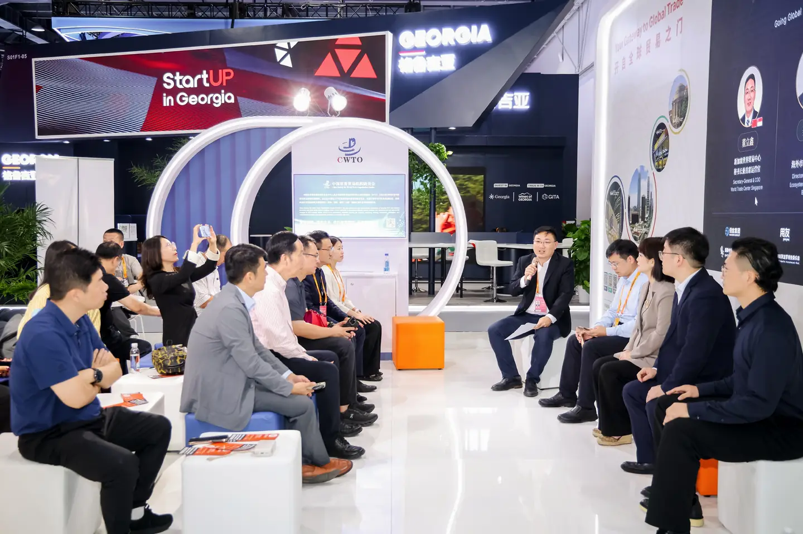
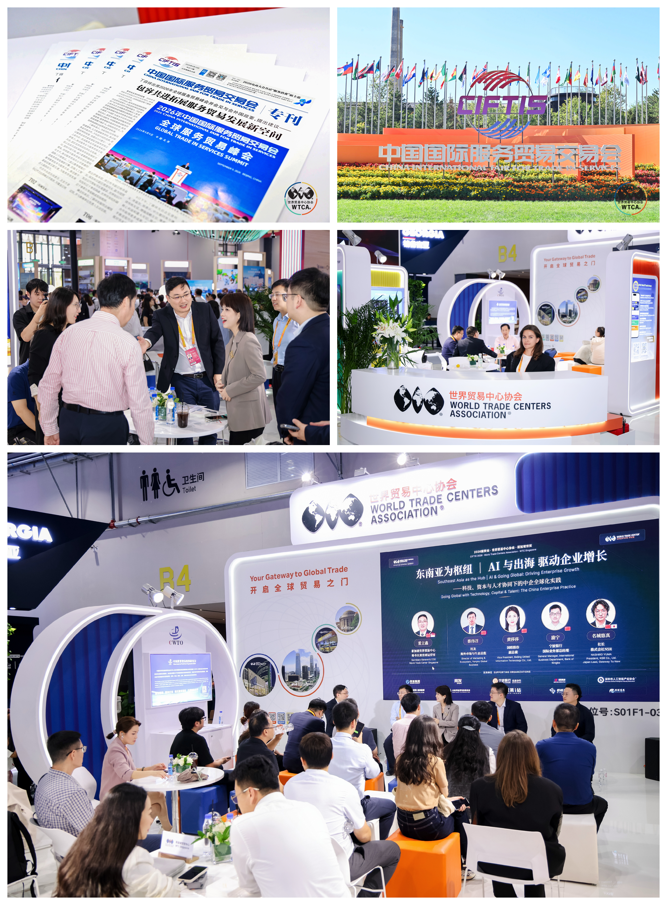

Beijing, 11 September 2026 — During the 2026 China International Fair for Trade in Services (CIFTIS), Bruce Dong (Dong Lixin), Secretary-General and COO of World Trade Center Singapore (WTCA Singapore), hosted a roundtable at the WTCA's dedicated pavilion in the Shougang Park exhibition hall. Titled "Southeast Asia as the Hub — AI and Going Global Driving Enterprise Growth: Chinese Enterprise Globalization in Practice through the Synergy of Technology, Capital and Industry," the session focused on how AI is reshaping Chinese companies' globalization pathways, bringing together four guests from the technology, finance, industry and overseas fronts for in-depth exchange, forming a four-dimensional lineup of "technology — finance — industry — overseas."
CIFTIS is co-hosted by the Beijing Municipal People's Government and the Ministry of Commerce of China as a national, international platform for opening up the trade in services sector. The World Trade Centers Association (WTCA) is one of only five official international cooperation organizations of the fair, alongside the World Intellectual Property Organization (WIPO), the International Trade Centre (ITC), the World Trade Point Federation (WTPF) and the Global Alliance for Trade in Services (GATIS). Since 2016, WTCA has built a long-term, in-depth partnership with CIFTIS, participating each year through a dedicated pavilion, themed forums and B2B matchmaking, leveraging its network of city members across nearly 100 countries and territories to extend the fair's global brand reach and industry connections.

AI Is Changing Not Efficiency, but the Decision-Making of Going Global
In his opening, Bruce Dong noted that in the past Chinese companies going global largely replicated business models that had already worked domestically, but AI is now changing that very logic. He pointed out: "AI will no longer be merely an efficiency tool for going-global companies; it will reconstruct the underlying logic of how companies choose markets, allocate capital and build local teams." He further argued: "Whoever applies AI at the decision layer, not just the execution layer, will move faster from this Southeast Asia hub." He said Southeast Asia has become the top choice for Chinese companies going global precisely because it is the convergence point of AI adoption, capital allocation and industry opportunity.
"AI will no longer be merely an efficiency tool for going-global companies; it will reconstruct the underlying logic of how companies choose markets, allocate capital and build local teams."
— Bruce Dong, Secretary-General & COO, WTCA SingaporeThe Technology View: Going Global Is First the Globalization of Data and Systems, Not of Models
Cai Weizhao, Director of Overseas Market and Ecosystem at Yonyou, pointed out that there is no one-size-fits-all answer for Chinese companies' digital globalization path; it must be tailored to company size, globalization stage and industry reality. He said large enterprises should plan a global operating system from the outset of going global, integrating marketing, supply chain and finance-tax compliance into a single foundation design; small and medium enterprises can start with cloud-based, lightweight tools, first getting key business running, then gradually expanding. He also stressed that regardless of scale or industry, Chinese companies' past experience of "copy-and-paste globalization" is being rewritten by AI — the real common bottleneck is not whether model capability is sufficient, but that domestic and overseas data and business systems are not connected. Only by linking "system silos" into a network can AI extend from execution-layer efficiency such as customer service and translation to decision-making such as market judgment, supply-chain allocation and finance-tax compliance. Yonyou has served companies going global for over two decades, currently operating 14 overseas branches, with more than 200 partners, serving over 2,300 enterprise clients across 40-plus countries and regions; its products support multilingual, multi-country localization suites and deploy overseas data centers to meet clients' compliance and data-security needs. Yonyou's product matrix is centered on AI, upgrading comprehensively across core business scenarios such as finance, HR, supply chain and manufacturing, helping global enterprises move from digital management to intelligent operations.

The Finance View: Full-Chain Services for Going-Global Companies
Li Ning, General Manager of the International Department of the Beijing Branch of Ningbo Bank, said that Chinese-funded companies are accelerating their pace of going global, but the process is far from easy and faces a series of challenges. Ningbo Bank has upgraded its "Global Win" service system, built around "17+9+N" — 17 overseas investment services covering the full lifecycle of going global, and 9 overseas financial services — and has served over 1,000 going-global companies cumulatively. In this process, Ningbo Bank aims not merely to be a financial service provider, but to act as a calibrator of information and a connector of resources, becoming companies' comprehensive, integrated going-global partner.

The Industry View: Industrial Internet Platforms Take the Industrial Belts Global
Huang Shasha, Vice President of Guolian Co., Ltd. and CEO of Weiduoduo and Zhiduiduiduo, shared practical observations on industrial-belt globalization from the perspective of an industrial-internet platform. She said that platforms under Guolian — Weiduoduo, Zhiduiduiduo, Feiduoduo, Liangyouduoduo, Tuduoduo and others — connect multiple industrial belts, where the most common bottlenecks for industrial-belt companies going global are channels, supply chains and local trust. The value of an industrial-internet platform lies precisely in helping companies with cross-border supply-demand matching, price discovery and supply-chain digitalization. She pointed out that Chinese companies going global often face the hurdle that "product strength is not equal to market strength" — making a good product does not mean standing firm in the local market; data connectivity and local trust are exactly the key links the platform can solve for companies. She said the globalization path of industrial-internet platforms is essentially, led by digital links, to convert the cluster advantages of China's industrial belts into the systematic competitiveness of going global together.

The Japan Lesson: Technology Lowers Entry Cost, but Not the Time to Build Trust
YUMA NASHIRO, President of NSR Co., Ltd. (Kabushiki Kaisha NSR), shared observations on mutual learning from the perspective of Japanese companies' own globalization history. He said that Japanese companies achieved the first stage of globalization growth precisely by being the first to "go global" into Southeast Asia, an experience directly relevant to today's Chinese companies; conversely, for Chinese companies to truly break into the Japanese market, they too must go through a localized validation process — "The Japanese market demands more trust than price; whoever wins trust first is the one whose products get a chance to grow here." He also argued: "AI may lower the organizational cost for a company to enter a market, but it will not eliminate the time needed to build local trust."
"AI may lower the organizational cost for a company to enter a market, but it will not eliminate the time needed to build local trust."
— YUMA NASHIRO, President, NSR Co., Ltd.
In the AI Era, What Going Global Ultimately Competes On Is "Integration Speed"
In his closing, Bruce Dong said: "In the AI era, what going-global companies ultimately compete on is not a single AI technology, but the integration speed of technology with capital, data, industry, compliance and the local trust system." He said: "WTCA Singapore will continue to leverage the global WTCA network to bring capital, technology and trust — these three things — to more Southeast Asia hub cities and more concrete AI-driven going-global projects."
"In the AI era, what going-global companies ultimately compete on is not a single AI technology, but the integration speed of technology with capital, data, industry, compliance and the local trust system."
— Bruce Dong, Secretary-General & COO, WTCA Singapore
Reportedly, this session is the second roundtable forum hosted by World Trade Center Singapore at the WTCA dedicated pavilion during this CIFTIS. Earlier, the roundtable titled "Bridging Trust, Building Pathways — Global Pathways and Ecosystem Building for the Life & Health Industry" was held focusing on the globalization of the health industry. Amid a deeply adjusting global economy and intensifying stock competition, WTCA Singapore will continue its mandate of "connecting capital, innovation and global markets," leveraging the WTCA global network to create broader space for Chinese companies to "bring in" and "go out."



About the World Trade Centers Association
The World Trade Centers Association (WTCA), founded in 1970, is a non-profit, non-political organization dedicated to establishing and operating World Trade Centers worldwide to promote regional economic development and international trade and investment. Headquartered in New York, its global network spans nearly 100 countries and territories with over 300 World Trade Centers, serving thousands of member companies and clients by helping them source, find customers and improve financing and investment access.
About World Trade Center Singapore (WTC Singapore)
World Trade Center Singapore is the WTCA's officially authorized member in Singapore. Through three business pillars — WTC ONE Club, GlobalX and WTC Fund — it connects global capital, innovation resources and market opportunities, providing enterprises with cross-border matchmaking and globalization support.